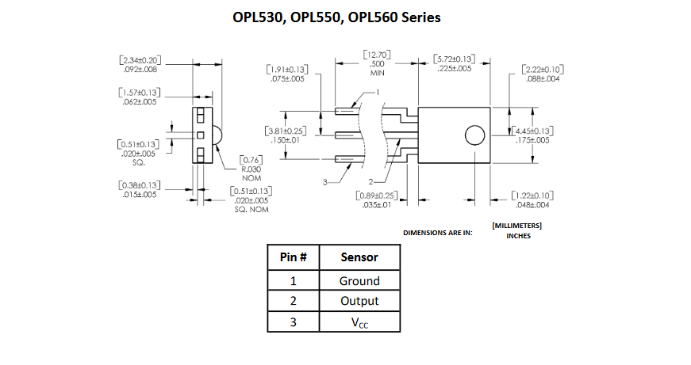
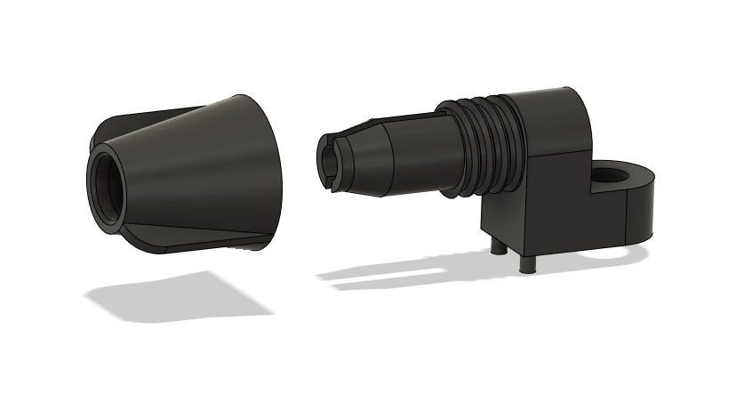

July 6, 2023
It is common for applications that produce a lot of interference, such as tesla coils, to use a fiber optic input.
A common choice for such projects is the Industrial Fiber Optics IFD-95T. This receiver has a well designed plastic casing that allows a 2mm OD fiber optic cable to be tightened into the receiver. This sensor is generally good, but it tends to be extremely expensive, at over $13 CAD on DigiKey at the time of writing. This might be a big fraction of the entire BOM cost.
The OPL530, while still expensive at just under $3 CAD, is much more affordable. Electrically, it is almost identical to the IFD-95T, except for that it is most sensitive to near IR, rather than red light. The OPL530 does not come with any sort of housing that secures it to the fiber optic cable, but this can be relatively easily 3D printed.
 Source: OPL530 datasheetThe 3D printed housing can fit any optical sensor or LED that is similar to these dimensions.
This design, paired with the OPL530, is almost entirely a drop-in replacement for the IFD-95T. It is not exactly identical; it is slightly taller, the screw nut is slightly wider, and it uses a different thread, but the PCB footprint is the same.
The sensor housing should be printed with the open end facing up. Enable supports only for where they touch the build plate, and print the screw nut with the narrow end facing down, as to not distort the threads. Use raft if necessary.
When soldering, make sure to check that the micro lens of the sensor is aligned with the housing, since I designed it to be more loose rather than tight, and the sensor might fall down towards the PCB. Consider using hot glue or something to lightly secure the sensor into the housing.
Downloads: